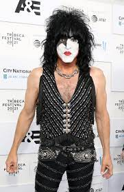

AC/DC
Paul Stanley
Paul Stanley (Manhattan, New York, 1952. január 20. –) amerikai rockgitáros és énekes. Az államok egyik legnagyobb rocksztárja, aki a KISS énekes-gitárosaként a hetvenes évek eleje óta a csúcson van, jellegzetesen magas hangja még manapság is egyedülálló, és a zenekar egyik jellegzetessége. Legfontosabb öröksége között van az, hogy érzésre és szinte a törzsi összetartozásra építő rock zenei rajongás, mára nagyon komoly érdekeket mozgató üzletté alakult. A KISS-hez a kommersz zenei világot adta mindig is. Könnyen érthető, könnyed, egyszerű, nagyjából ez jellemzi stílusát. A KISS mellett eddig két szóló albumot adott ki. 1978-ban, amikor a KISS minden tagja, alaposan megtervezve szólóban dolgozott és 2006-ban, amikor kiadta a Live To Win című lemezét.

Gene Simmons
Gene Simmons (eredeti neve: Chaim Weitz, Tirat HaCarmel, Izrael, 1949. augusztus 25.) magyar származású, izraeli születésű amerikai zenész, basszusgitáros, a Kiss együttes egyik alapító tagja. Édesanyja, Kovács Flóra, Magyarországon született. Édesapja, Witz Ferenc szintén magyar. Simmons beszél magyarul.
Tommy Thayer
Tommy Thayer (Portland, Oregon, 1960. november 7. –) amerikai gitáros, 2002-től a KISS együttes tagja. Alice Cooper, a Deep Purple, Rory Gallagher és a KISS hatására kezdett gitározni 13 évesen. Tommy Thayer napjainkban a Kiss gitárosa. 2002-ben ő lett az űrember a zenekarban. Amikor Ace Frehley elhagyta az együttest, ő töltötte be a helyét. 2010-ben bejárták a Sonnic Boom Over Europe (Hangrobbanás Európa-szerte) című nagy európai turnét. A War Machine az, amiben Gene kiélheti a horror iránti rajongását. Kemény nóta, Tommy ebben is profi, szólója remek rock and roll témákat hoz, mintha a fiatal és pontos Ace lenne. Profi a szólója, ahogy profi a show elemnek szánt visszatérő ütemek lehangolt stílusa is. Rudd Sonor dobokat és Paiste cintányérokat használ. Egyszerű "2/4-es" ütemekből álló stílusa a zenekar hangzásának egyik fontos védjegye. Mindazonáltal a rock egyik legmeghatározóbb dobosa.

Eric Singer
Eric Singer (született Eric Doyle Mensinger) (Cleveland, Ohio, 1958. május 12. –) amerikai dobos, egyike a rock legnagyobb alakjainak. Pillanatnyilag a Kiss zenekar és Alice Cooper állandó dobosa, de pályafutása alatt játszott több híres együttesben, és ismert művészek oldalán.Az énekes Eric Doyle Mensinger néven Clevelandben, Ohio államban született . Euklidészben, Ohio államban nőtt fel. 1976-ban érettségizett az Euklidész Gimnáziumban. [1] Apja, Johnny Mensinger zsidó német származású volt, és helyi big band vezetője volt, aki a környéken, valamint az Egyesült Államokból Európába tartó tengerjáró hajókon játszott. [2] [3] [4] [5] Eric testvére, Jon Mensinger a New York-i Mark Morris Dance Group vezető táncosa volt . [6] A fiatal Eric kiskorában kezdett dobolni, és olyan zenekarok inspirálták, mint a Humble Pie , a The Who , a Led Zeppelin , a Black Sabbath ., The Beatles and Queen és olyan dobosok , mint John Bonham , Keith Moon , Cozy Powell , Roger Taylor , Bill Ward és Buddy Rich . Eric a King Musical Instrumentsnél dolgozott, mielőtt profi dobos lett volna. Singer első profi dobos munkája a clevelandi Beau Coup zenekarban volt. 1984-ben Lita Ford turnédobosa lett .